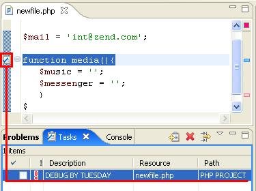
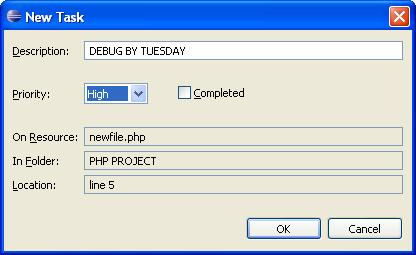
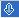

Tasks are reminders or notes created by the programmer. In general, they refer to a task that must be performed on the code or project. Tasks consist of a name and a priority.
They are attached (associated) by the programmer to a specific line of code in a specific file and are automatically synchronized with the Editor. They can be associated with the entire file instead of a specific line if required.
If you double click a Task in the Task View - the Editor will automatically open the file referenced by the task to the specific line of code that the task refers to.
Tasks are used as reminders of actions, work to do or any other action required by the programmer and appear in their own View.
A Task consists of a Description, a Priority, the name of the file referred to (the Resource), the Folder that the file is contained in and the line number (the Location).
|
 |
 Figure 2 - Defining a Task |
The Task View contains the following information:
Completion Status check box - indicates the current status of the task.
Priority: High (), Normal or Low ().
Description: The description of the task.
Resource: Name of the file containing the Task.
Path: Location of the resource.
Location: The line number of the problem is found within the source.
Click Window | Show View | Tasks to open the Task View from any location.
Figure 3 - Open Task View
You can sort Tasks by clicking on any of the task parameter columns to arrange the Tasks according to that parameter. (See Configuring Task Parameters.) You can filter tasks by:
Task type
Task location
Description (alphabetically)
Priority
Status